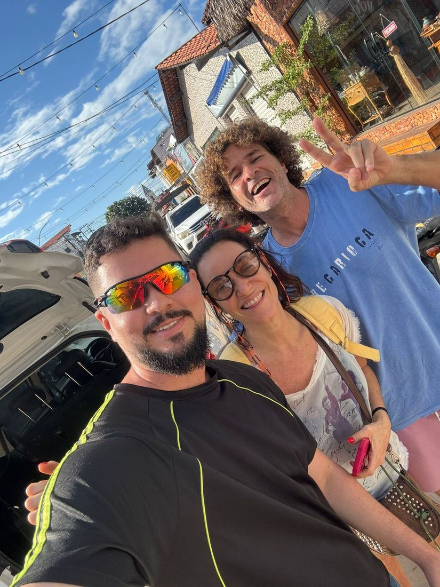

Horário noturno (22h às 5h): acréscimo de R$ 150 por pessoa. O compartilhado depende de lotação mínima e horário fixo, então confirme a disponibilidade pelo WhatsApp.
Valores de referência. O preço final é confirmado pelo WhatsApp conforme data, disponibilidade e rota. Consulte pacotes de ida e volta e condições para grupos.
Depoimentos
Quem viajou, indica.
O que dizem os passageiros que escolheram a Explore para chegar aos Lençóis Maranhenses.
“
Motorista chegou 20 minutos antes, esperou sem cobrar quando nosso voo atrasou e ainda nos deu dicas que transformaram nossa experiência nos Lençóis.
AC
Ana Clara MendesSão Paulo, SP, março de 2024
“Viajamos em família com dois filhos pequenos. Gabriel foi extremamente paciente e compartilhou conhecimento sobre a região que não está em nenhum guia. Já indicamos para seis conhecidos.”
JC
Juliana CostaBelo Horizonte, MG, julho de 2024
“Serviço de nível internacional num dos destinos mais remotos do Brasil. Comunicação ágil, carro novinho e um profissional que faz de tudo para a experiência ser perfeita.”
RF
Rafael FonteneleRio de Janeiro, RJ, janeiro de 2025
Momentos reais
Passageiros de verdade, na estrada com a gente.
Cada viagem começa com uma foto no desembarque. Toque numa foto para ampliar.

8+anos de estrada
Sobre a Explore
Experiência local com padrão executivo.
Há mais de 8 anos percorrendo as estradas, trilhas e trechos de areia do Maranhão, a Explore nasceu de um compromisso simples: fazer cada viajante se sentir bem-recebido desde o primeiro momento em solo maranhense.
Somos o elo entre o aeroporto e a paisagem mais impressionante do Brasil, e sabemos que essa primeira impressão define a viagem inteira.
“Minha missão é que você chegue relaxado, seguro e já encantado com o que o Maranhão tem a oferecer.”Gabriel, fundador e motorista
CNH categoria D ativa
Seguro de passageiros
Veículos vistoriados
Monitoramento de voos
Atendimento em inglês
Nota fiscal disponível
Dúvidas frequentes
Antes de reservar.
Não achou sua resposta? Respondemos no WhatsApp em poucos minutos.
Recomendamos pelo menos 24 horas. Em alta temporada (julho, janeiro e feriados prolongados) a agenda lota. Se for de última hora, chame mesmo assim, fazemos o possível para atender.
Acompanhamos os voos em tempo real. Se houver atraso, ajustamos o horário da busca sem custo adicional e avisamos pelo WhatsApp.
Sim. Atendemos Atins, Vassouras, Paulino Neves, Tutóia, Mandacaru, Caburé, Parnaíba (PI) e qualquer outro ponto do Maranhão mediante orçamento.
Pix, dinheiro e cartão de débito ou crédito, no início ou no fim da viagem. Para grupos e pacotes dá para parcelar, consulte pelo WhatsApp.
Sim, sem custo. Basta informar idade e peso da criança na reserva.
Sim. A Spin tem espaço para pranchas, kite e cadeiras de rodas. Avise na reserva para garantirmos o carro certo.
Seu transfer para os Lençóis começa aqui.
Diga a data, o voo e a pousada. O Gabriel responde no WhatsApp com o valor e a confirmação.